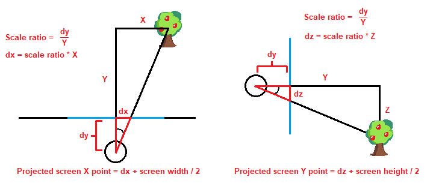

Perspective Projection Part 2: Making a Super Scaler!
Actually, I lied! There is ONE more concept we need to go over.
Currently we have a view into a static game world, but what if we wanted to move around? We can try moving the position of the viewer, but they're not actually part of the game world and can only view it from the outside! Instead, let's introduce the concept of a Camera.
The camera is the point within the game world that determines what we can currently see. Our viewer then, is essentially watching a "live feed" of what our camera can currently see. While the camera does have a position within the game world, in order to project everything correctly all points need to be moved AROUND the camera relative to its position and rotation.
As for projecting 3D points onto a 2D plane, it's exactly the same process as before but with an added dimension: the Z axis! The Z axis means "up and down" in our world. Simply use the scale factor of dy/Y and multiply it by the X distance to get our screen X. Do the same for Z, multiply it by the Z distance to get our screen Y, since in our world Y is distance and Z means "up and down."
I feel like now is a good time to mention that some people prefer the Y axis to mean "up and down" within
the game world, hence the terms Z-up and Y-up.
Neither way is inherently better, but Z-up
makes more sense when talking about projection from a top-down view, which is why I used it previously. Y-up
has the advantage of making more sense during the actual process of projection, since with Y-up the Y
distance
determines the projection of the screen Y rather than the Z distance. Semantics!
Now, let's view our top down view of our game world side by side with our brand new 3D projected version! Surely nothing can go wrong, right??
Unfortunately, this looks like a jumbled mess. We actually forgot the most important aspect of the Super Scaler effect: the SCALING! Luckily, we can simply multiply the width and height of the sprite by our scaling ratio to get:
A much better showing! Though still, something feels a bit off. Perhaps it's the fact that occasionally, smaller objects will overlap larger ones despite being farther in the distance. Who knows!According to segaretro, Sega's hardware was capable of z-buffering way back in 1985! If that's true, they were pretty far ahead of the curve. As for us, we'll just have to manually sort the objects by how close they are to the camera. This part isn't exactly very interesting and I didn't really find it worth covering in depth, but feel free to look at the JS code if you really wanna know how it's done.
Muuuuch better!! Though, it's rather BORING having the viewpoint be so static. Let's have our camera move around in a circle while panning to face the center of our scene!As stated before, in order to render the scene all objects need to be moved relative to the camera's position. If we wanted to rotate the camera, all objects would need to be rotated relative to their position from the camera as well as the camera's rotation angle.HERE is an excellent reference on how rotation about a point is done, we'll use it to rotate and move our camera!
But enough RAMBLING, here's what it looks like!
Pretty slick, huh?? NOW we're putting the SUPER in SUPER SCALER!!
Just for fun, here's the same scene except the sprites don't scale. Pretty trippy...
And that's it! We've just performed the basics of perspective projection, and used sprites to create a
"Pseudo 3D" world of trees! This is all for now, but I do intend on hopefully doing more with this site
later.
Until then, thank you for reading this far. Stay tuned!